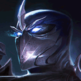

核心裝備
 雄心之鋼
雄心之鋼單線頻繁貼近敵人，能穩定堆疊最大生命。
 日炎聖盾
日炎聖盾提高貼身清線與持續傷害。
 荊棘之甲
荊棘之甲對普攻與高回復陣容補護甲重創。
 雅瑪蘭守護像
雅瑪蘭守護像後期多人近戰時疊雙抗，提高承傷。
 好戰者鎧甲
好戰者鎧甲高生命後脫戰回復，適合 ARAM 反覆團戰。

Shen · 嘲諷反開／全圖護盾型坦克
三技不要只拿來往前衝。敵方刺客進場時反向嘲諷通常更有價值；一技要讓魂刃穿過敵人才能強化普攻。大絕在 ARAM 主要拿來救低血隊友與取得護盾，不是跨圖支援。
本站評級理由：慎能用三技一次嘲諷多人，二技格擋普攻對射手陣容也很有效，大絕能保住被集火隊友；7.1d 已把標準 ARAM 傷害從 110% 回到 100%。在單線中大絕的跨圖價值較低，因此整體功能性不如峽谷。
7.1d 標準 ARAM：慎傷害輸出 110%→100%。7.0 提高能量回復 10/s→12/s；承傷與護盾未見後續標準 ARAM 百分比調整。
單線頻繁貼近敵人，能穩定堆疊最大生命。
提高貼身清線與持續傷害。
對普攻與高回復陣容補護甲重創。
後期多人近戰時疊雙抗，提高承傷。
高生命後脫戰回復，適合 ARAM 反覆團戰。

普攻與物理傷害多時最實用。

控制與魔法傷害多時使用。

貼身換血提高傷害、回血與最大生命。

嘲諷多人後獲得護盾，提高強開容錯。

減少進場第一輪爆發。

穩定增加最大生命，放大坦度與護盾。
技能加速讓嘲諷與格擋區域循環更快。

閃現嘲諷是最直接的多人體控制。

反開刺客或保護後排時很好用。
1 技 > 3 技 > 2 技
主 1 提高強化普攻與護盾循環，次 3 降低嘲諷冷卻；二技提供普攻格擋，大絕能點就點。
先讓魂刃穿過敵人再打強化普攻。三技留著反開，不必每波都主動往五人臉上衝。
雄心＋日炎後可承擔第一波傷害。隊友被集火時大絕護盾能拖過爆發，再用三技接控。
盯敵方刺客與射手位置。二技罩住己方核心可擋普攻，三技一次嘲諷多人往往比追單一後排更重要。
 自然之力
自然之力敵方法術持續傷害高時補魔抗與移速。
 冰霜之心
冰霜之心敵方攻速核心多時降低其攻速。
 黎明法衣
黎明法衣隊伍需要更多團隊坦度與控制收益時使用。
看遊戲卡片下方分類 → 點相同分類 → 看左側 S+／S／A。
三技能可一次嘲諷多人，控制增幅能直接提高反開與集火價值。
被動與大絕都能提供護盾，護盾免控與護盾真傷可以穩定利用。
坦度、反位移與貼身控制非常符合慎站前排保人的工作。
生命與體型能提高嘲諷進場後承傷，也讓護盾與前排價值更高。
魂刃穿過敵人後會強化普攻，技能後普攻型增幅很契合。
原版雄心之鋼可直接強化目前核心裝備；終極革新、秘術拳擊等單卡也有很高價值。
v80.18.0 ARAM B 第一批：套用慎 7.1d 標準 ARAM 100% 傷害輸出，並保留坦克反開母版。
ARAM 使用獨立於召喚峽谷的資料集；本站會把官方模式平衡、單線 5v5 特性與出裝／符文適配分開判斷，而不是直接複製峽谷配置。